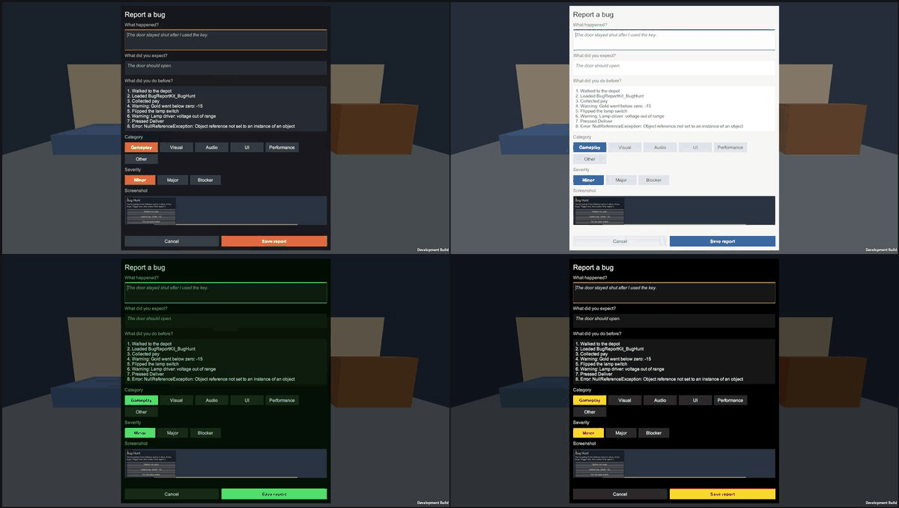
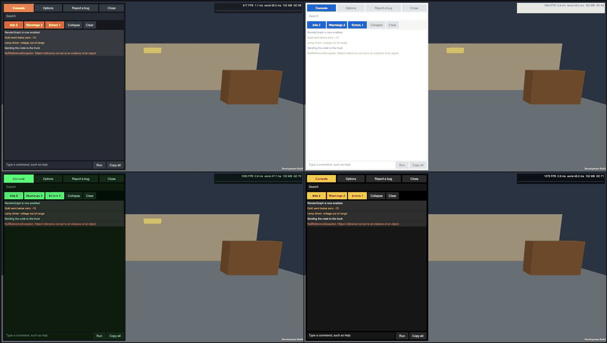

Make it yours
Everything testers see can be changed or switched off, with no code. Start with a preset, then change any detail.
Pick a look #
- Open Tools > All In One Bug Report Kit > Settings.
- Set Theme Preset to Studio (dark), Daylight (light), Terminal (green on black) or High Contrast.


That's it. For your own colours, make a theme asset: Assets > Create > All In One Bug Report Kit > Theme, or one of the Theme (Daylight / Terminal / High Contrast) entries. Assign it to Theme in the settings. Its inspector starts with the preset buttons and a live preview, and warns when words would be hard to read.
While playing, a theme change shows at once, even with the form or console open. From code:
BugReporter.UsePreset(ThemePreset.Daylight);
BugReporter.UseTheme(myTheme);
The Feature Gallery demo has a Make it yours: next theme button that cycles every preset.
What a theme changes #
| Setting | What it does |
|---|---|
| Colours | Dim behind the form, panel, text boxes, buttons, accent (main button, chosen chips, focus ring), text, hints, text on the accent, and the info, warning, error and success colours |
| Font | Your own font, or Unity's built-in one |
| Text Scale | Every word and row from 80% to 160%. Buttons and chips grow to fit their words |
| Your own images | Panel, button and text box sprites, 9-sliced when the sprite has borders, tinted by their colour |
| Keep Own Image | Shows a sprite in its own colours instead of tinting it |
| Form Max Width | How wide the form gets at 1080p |
| Overlay Side | Console on the left or right |
| Stats, Badge, Report Button, Pinned corners | Where each sits on screen |
| Respect Safe Area | Keeps everything clear of notches and rounded corners |
| Status messages | Display as for each message (below) |
| Your own icons | Replace the built-in tick, cross and bug |
Display as #
Every status message offers the same choice: icon and short text, icon and full text, short text, full text, icon only, or nothing.
| Message | Short | Full |
|---|---|---|
| Saved | Report saved | Report saved on this device |
| Not saved | Not saved | Could not save |
| Error badge (console closed) | the count | 2 errors 1 warnings |
| Note after the form closes | Report saved | Report saved on this device |
Icons take the message's colour: success for saved, error for not saved, error or warning for the badge.
Your own words #
Every word testers read comes from one table. Make one with Assets > Create > All In One Bug Report Kit > Text
Table, press Fill With Every Word, and type yours in the right-hand column. Assign it to Text Table in the
settings. Empty rows keep the kit's words. For languages, set ReportText.Translate from your localisation code instead.
Switch things off #
| What | Where |
|---|---|
| The whole kit in a build | Settings > Include In (Development Builds Only, Always, Never) |
| Debug overlay | Settings > Enable Overlay |
| Stats strip | Settings > Stats Strip: With Overlay, Always, Off |
| Error badge | Settings > Error Badge, or Display as None |
| Commands | Settings > Enable Commands |
| On-screen Report button | Settings > Show On Screen Button |
| Touch gestures | Settings > Touch Gestures |
| Replay | Settings > Replay Seconds = 0 |
| Any part of a report | Testers untick it in the form; Settings > Default Parts sets what starts ticked |
| A status message | Its Display as: None |
Pin things on screen #
In the console's Options tab, Pin keeps an option on screen in a small panel while the console is closed, still working. Keep stats on screen does the same for the stats strip.
Bring your own UI #
Replace the form with BugReporter.UseForm(yourForm) (implement IBugReportForm) and the overlay with
BugReporter.UseOverlay(yourOverlay) (implement IDebugOverlay). Your UI gets the same report session, with its
screenshot, markup, parts and Submit, so nothing else changes. BugReporter.FormOpened, FormClosed,
OverlayOpened, OverlayClosed, ReportSaved and ThemeChanged let your game react.
Gamepads and keyboards #
Every button, text box and switch shows a ring in the accent colour when selected. The console opens with a tab selected, the form with the first text box, and the result with Close, so a gamepad works from the first press.